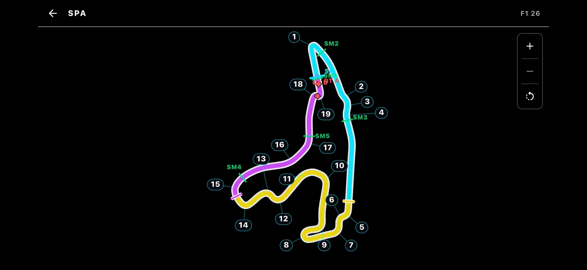
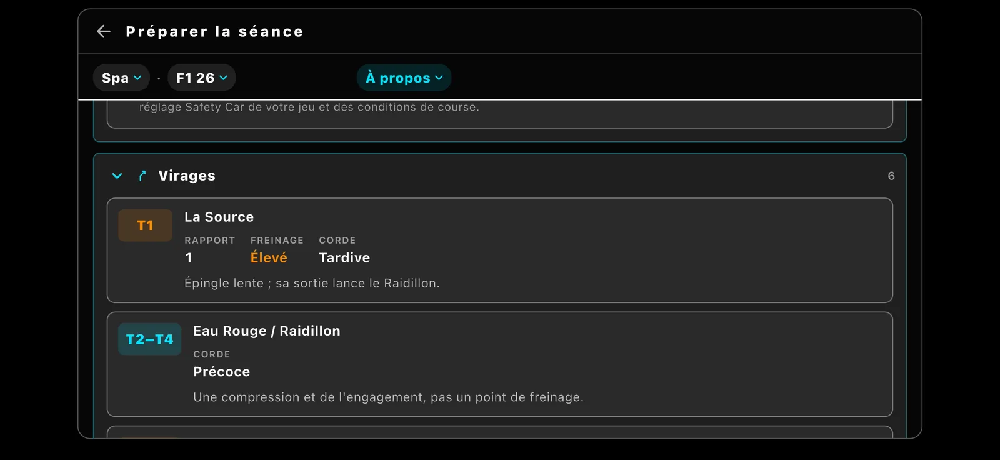
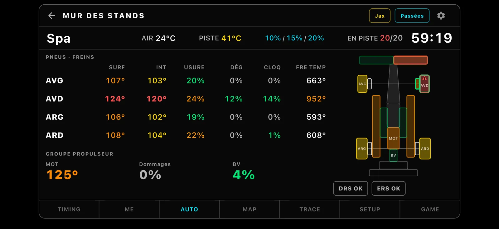

Conseils de course
Technique de pilotage, art de la course et règlements — des lectures courtes et pratiques.
Compagnon de sim racing pour iPhone
Un compagnon complet pour les pilotes F1 virtuels, organisé selon ce dont vous avez besoin avant, pendant et après chaque session. Tout ce qui figure sur cette page fait partie de la version actuelle; les travaux futurs sont présentés séparément à la fin.
Arrivez à chaque session en connaissant déjà le circuit. Choisissez un circuit et une voiture, puis planifiez la session à venir avec la connaissance du circuit et votre propre historique, côte à côte.
La couverture varie selon le circuit et la voiture; l'information manquante est signalée plutôt que devinée.


Gardez l'information critique sous les yeux sans changer de caméra ni encombrer l'affichage du jeu. Un affichage de course en mode paysage pour votre iPhone, à côté du volant.
Jax annonce ce qui a changé, au moment où ça compte, pour que vous gardiez les yeux sur la piste. Ses messages découlent directement de la télémétrie — cohérents et prévisibles, jamais improvisés.
Jax fournit de l'information et des rappels. Les décisions de pilotage et de stratégie vous appartiennent.
Voyez toute la course comme depuis le mur des stands : le peloton, le circuit et votre propre voiture, en direct. Ouvrez-le par-dessus le tableau de bord d'une seule touche, ou directement depuis l'accueil.



Revivez une course tour par tour. JMD reconstruit la course à partir de la télémétrie captée et montre comment le peloton a évolué, où les écarts ont changé et ce qui s'est passé en chemin.
Offert pour les courses et les courses sprint. La reprise utilise uniquement les données reçues par votre appareil — elle ne peut pas reconstruire ce que le jeu n'a jamais envoyé.
Chaque session terminée est enregistrée sur votre appareil. Chaque analyse s'adapte au type de session : essais, qualifications, contre-la-montre et courses montrent chacun ce qui compte pour eux.
Une session ne contient pas toujours tous les champs. JMD reconstruit ce qu'il peut de façon fiable et affiche les données manquantes comme manquantes.


Voyez comment vous avez piloté, pas seulement à quelle vitesse. Les traces sont enregistrées pendant que vous roulez et conservées avec la session.
Souvenez-vous de ce que vous avez utilisé et de ce qui a fonctionné. Les réglages sont captés pendant vos sessions et regroupés dans une bibliothèque filtrable par circuit.
Aucun compte, aucune inscription. Vos données restent sur votre appareil, sous votre contrôle.
Disponible maintenant
Technique de pilotage, art de la course et règlements — des lectures courtes et pratiques.
Découvrez Jax Max Delta avec les démos intégrées, sans jeu en marche.
km/h ou mi/h, °C ou °F.
Anglais, français et espagnol dans toute l'app.
Feuille de route
Des orientations, pas des promesses. Rien ici n'a de date, et un élément ne rejoint la liste ci-dessus qu'une fois livré.
Essais, qualifications et course reliés en une seule histoire.
Tendances sur de nombreuses sessions : rythme, constance, gestion des pneus.
Un contexte de stratégie qui tient compte des gommes.
À l'étude; non disponible pour l'instant.